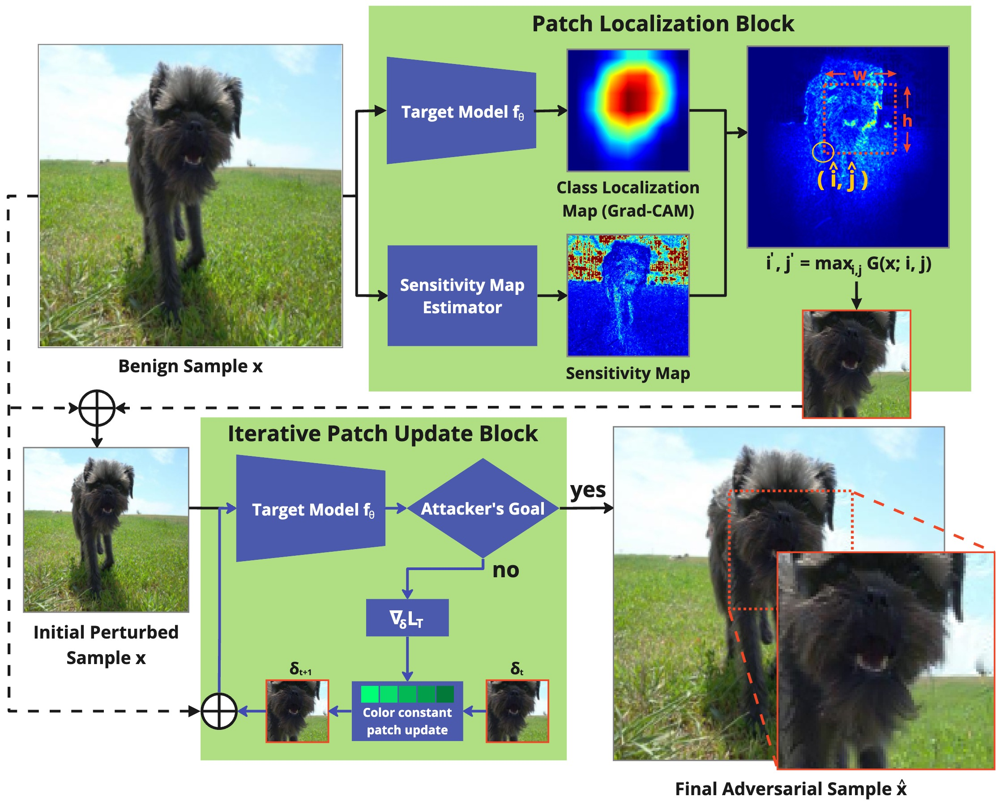
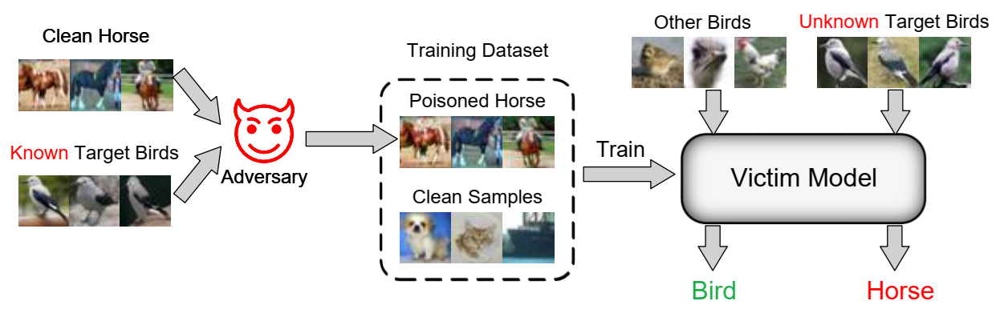
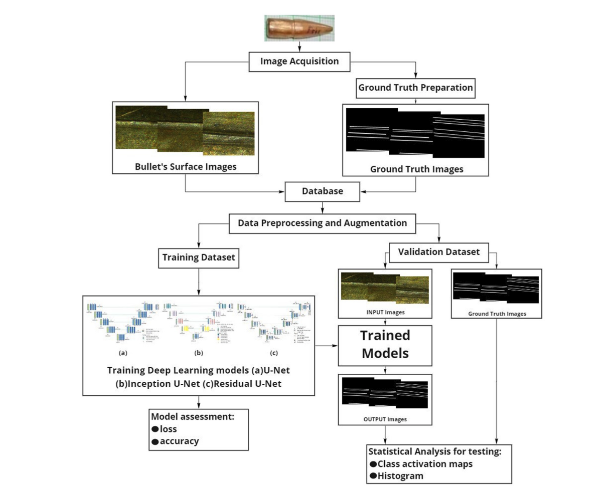

I’m Subrat Kishore Dutta, a first year PhD student at CISPA Helmholtz Center for Information Security and University of Hamburg
News
- 06/25: 1 paper accepted at ICCV 2025! Thanks to my supervisor and co-author Dr. Xiao Zhang.
- 05/25: Started my PhD at CISPA Helmholtz Center for Information Security and University of Hamburg 🎓
- 03/25: Defended my Master's Thesis! 🧑🎓
Publications

IAP: Invisible Adversarial Patch Attack through Perceptibility‑Aware Localization and Perturbation Optimzation.
Subrat Kishore Dutta, Dr. Xiao Zhang
ICCV, 2025

Can Targeted Clean-Label Poisoning Attacks Generalize?.
Zhizhen Chen, Subrat Kishore Dutta, Zhengyu Zhao, Chenhao Lin, Chao Shen, Dr. Xiao Zhang Arxiv Preprint, 2024

Study on enhanced deep learning approaches for value-added identification and segmentation of striation marks in bullets for precise firearm classification.
Subrat Kishore Dutta, Sudarshan Saikia, Abhilasa Barman, Ritumoni Roy, Kangkana Bora , Lipi B. Mahanta, R. Suresh Elsevier Applied Soft Computing, 2021